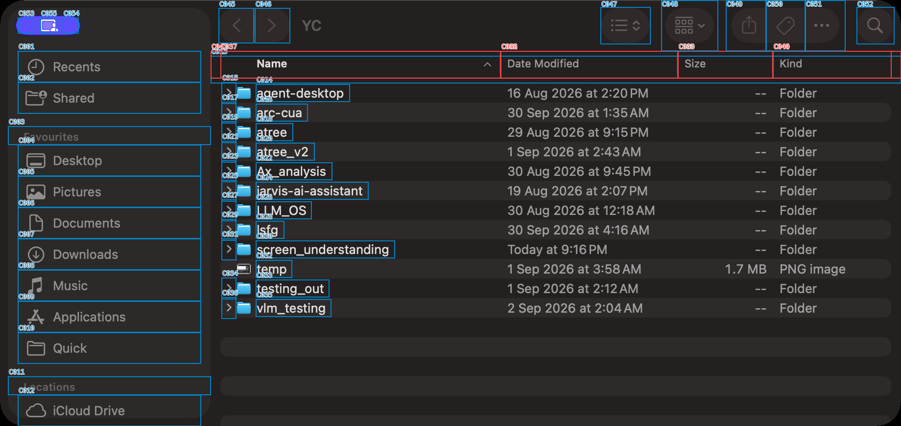
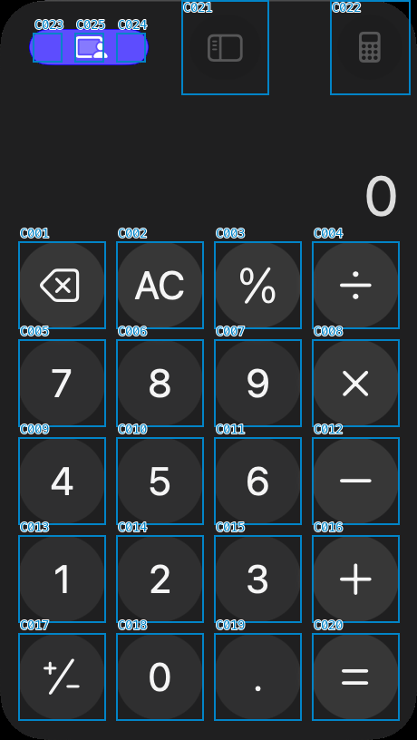
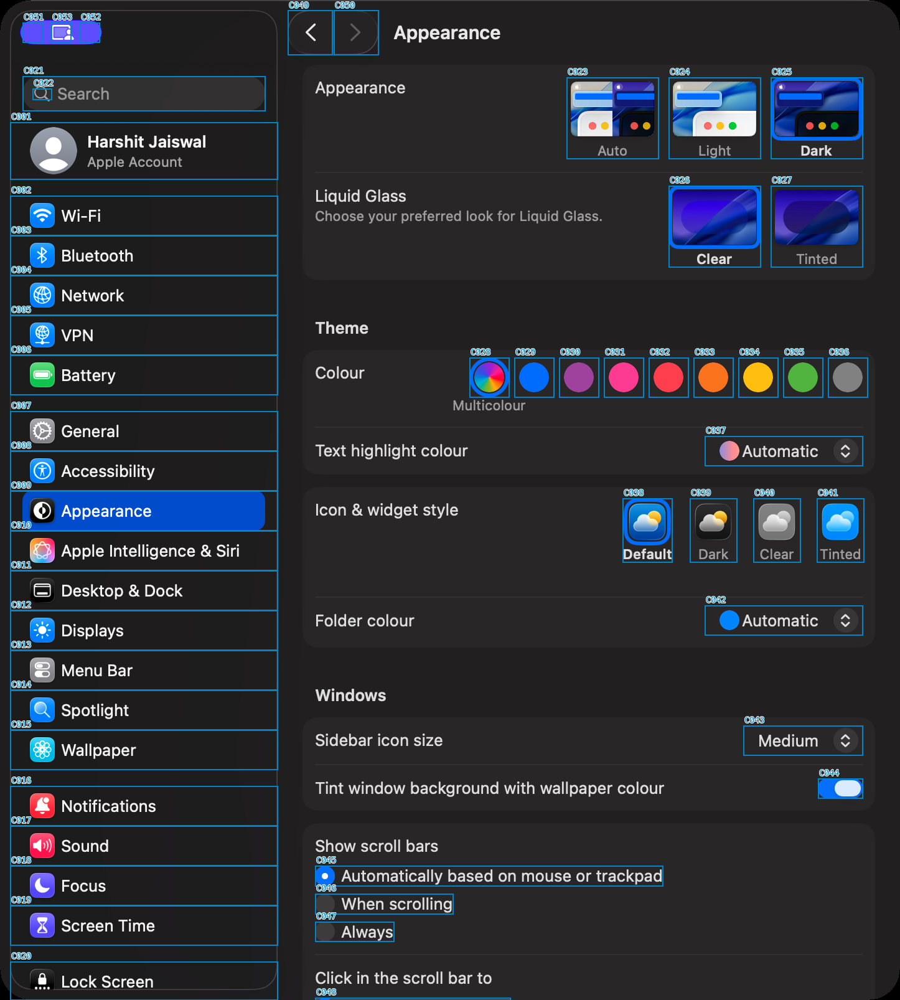

Finder
216 projected nodes → 195 entities; 55 control candidates; 8 with unresolved overlaps.
Capture: unverified []

Three paired captures from six app attempts. No per-app box edits. Finder is the earlier baseline; Calculator and Settings are fresh captures. This is a diagnostic, not proof of universal reliability.
The original Finder display filter was applied unchanged to the new paired captures. The new conservative algorithm is applied uniformly below: it preserves every projected node, coalesces only compatible nested nodes, retains context, and flags unresolved control overlaps. Raw layers remain available.
216 projected nodes → 195 entities; 55 control candidates; 8 with unresolved overlaps.
Capture: unverified []

35 projected nodes → 30 entities; 25 control candidates; 0 with unresolved overlaps.
Capture: unverified []

131 projected nodes → 103 entities; 53 control candidates; 0 with unresolved overlaps.
Capture: blocked ['capture_time_skew']
